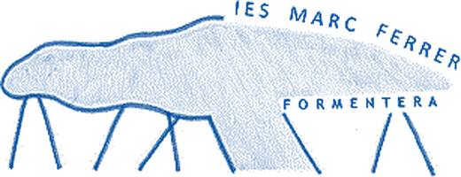

Avaluació de la lectura i l'escriptura a través del Pla Lector
Interpretar els resultats de les avaluacions de lectura i escriptura per decidir què reforçar, amb quin alumnat i quan, i fixar acords perquè el Pla Lector tengui continuïtat.
Sessió a sessió
Hi ha dos tipus de sessió. A les ponències, Miguel Ángel Tirado presenta el marc i les eines: n'hi trobareu la presentació, l'àudio i el resum. A les sessions de formació al centre, l'equip treballa amb aquests recursos fins a arribar a les seves conclusions i protocols, que es publiquen aquí. Els requadres amb línia discontínua encara són pendents.
-
28/09/2026Dilluns · 18.15-20.15
Ponència de Miguel Ángel TiradoFeta
Presentació: pendent Pòdcast: pendent Resum i idees clau: pendent Materials i productes: pendent -
22/10/2026Dijous · 16.30-19.00
Formació al centrePropera
Sessió de treball de l'equip amb els recursos de Miguel Ángel Tirado. Aquí es publiquen les conclusions, els acords i els protocols que en surtin.
Conclusions i protocols de l'equip: pendent -
12/11/2026Dijous · 16.30-18.30
Formació al centreProgramada
Sessió de treball de l'equip amb els recursos de Miguel Ángel Tirado. Aquí es publiquen les conclusions, els acords i els protocols que en surtin.
Conclusions i protocols de l'equip: pendent -
26/11/2026Dijous · 16.30-19.00
Formació al centreProgramada
Sessió de treball de l'equip amb els recursos de Miguel Ángel Tirado. Aquí es publiquen les conclusions, els acords i els protocols que en surtin.
Conclusions i protocols de l'equip: pendent -
21/01/2027Dijous · 16.30-18.30
Formació al centreProgramada
Sessió de treball de l'equip amb els recursos de Miguel Ángel Tirado. Aquí es publiquen les conclusions, els acords i els protocols que en surtin.
Conclusions i protocols de l'equip: pendent -
15/02/2027Dilluns · 18.15-20.15
Ponència de Miguel Ángel TiradoProgramada
Presentació: pendent Pòdcast: pendent Resum i idees clau: pendent Materials i productes: pendent
Pòdcasts i vídeos
Resums en àudio i vídeo elaborats a partir dels materials de la formació.
Els pòdcasts i vídeos d'aquesta formació es publicaran aviat.
Mapa conceptual
Les idees principals de la formació i com es relacionen.
El mapa conceptual d'aquesta formació es publicarà aviat.
Targetes de repàs
Toca una targeta per girar-la i veure la resposta.
Les targetes de repàs d'aquesta formació es publicaran aviat.
Test d'autoavaluació
Tria una resposta a cada pregunta i comprova-la. No es guarda cap resultat.
El test d'aquesta formació es publicarà aviat.